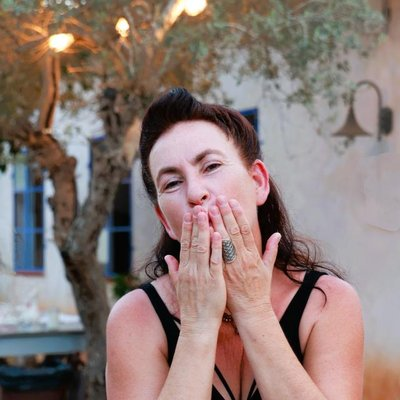
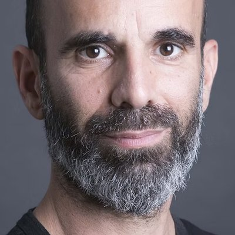

חזרה לראשוניות
נצעד במדבר בעירום, נשיל מסכות ושכבות הגנה, ונפתח את הלב בסקרנות, פליאה ונוכחות טהורה ברגע.
להשיל. לנשום. לפגוש את המדבר הפראי ואת עצמנו לעיתים בעירום, בדיוק כפי שנבראנו.
אני רוצה לשמוע עודלהשיל את מה שכבר לא משרת אותנו. לחזור לראשוניות. לנשום עמוק, לפגוש את המדבר הפראי ואת עצמנו בדיוק כפי שנבראנו.
אנו מזמינים אתכם ואתכן למסע בן יום וחצי של חיבור עמוק לטבע, לגוף ולרוח, המשלב עבודה שמאנית, נוכחות טנטרית ומפגש שבטי עוצמתי.
המסע מתקיים בחלקו בעירום, ומסתיים בטקס לילי משותף במקדש אירוטי-טנטרי.
נצעד במדבר בעירום, נשיל מסכות ושכבות הגנה, ונפתח את הלב בסקרנות, פליאה ונוכחות טהורה ברגע.
ניגע באדמה, נבעיר אש, נבקר בגב מים ונטפס על עצים עתיקים — דרך מפגש בלתי אמצעי עם האלמנטים.
נכתוב, נשיר, נשחק, נצעק, נבכה, נצחק ונחבר בין הגוף, הצ'אקרות והרשת האנרגטית.
הגברים ייצאו למסע עצמאי במרחב המדברי הפתוח. מרחב של חיבור לטבע, לגוף, לאדמה, לגבולות הנפש ולאינטימיות.
המסע מזמין לפגוש את הראשוניות, את חופש הביטוי ואת הקשר הישיר בין האדם למרחב שמסביבו.
המסע במדבר מתקיים בחלקו בעירום.
הנשים ייצאו למסע עצמאי במרחב המדברי הפתוח. מרחב של חיבור עמוק לטבע, לגוף ולרוח, דרך עבודה שמאנית ותנועה חופשית.
נאפשר למה שמבקש להשתחרר לצאת, ולמה שמבקש להיוולד לקבל מקום — בסקרנות, נוכחות וחיבור.
המסע במדבר מתקיים בחלקו בעירום.
לקראת ערב נגיע לחאן המדברי. ננוח, נתקשט, ונאחד את שני השבטים למפגש טנטרי של חיבור, איזון וקירוב בין המינים, שימשיך אל תוך מקדש אירוטי לילי: טקס טנטרי משותף של מגע, חושניות וקרבה, מתוך הסכמה מלאה ובקצב של כל אחד ואחת.

אוהבת אדם ואדמה, עוסקת בשמאניזם מעל 30 שנה ומחוברת בנימי נפשה למדבר. נטורליסטית כתפיסת עולם, מנטורית המובילה לתזוזה. מנחה קבוצות נשים בתחומים שונים וקבוצות המתרגלות שמאניזם פרקטי.
גרה בפרדס חנה עם בתה ענבר, בזוגיות עם גיא.

סופר, איש חינוך, מנחה קבוצות וחוקר של נפש האדם, העוסק שנים רבות בהנחיית תהליכי עומק ומסעות לגברים אל קצוות הארץ וגבולות הנפש והאינטימיות.
בשנת 2020 הוציא לאור את ״זקופים: גברים מדברים מיניות״. מתגורר בקיבוץ עין דור, אב לשלוש בנות ובזוגיות עם עפרי.
ניתן להירשם כיחידים/ות או כזוגות. לפני ההרשמה נקיים שיחת בדיקת התאמה קצרה.